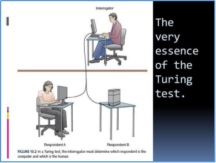
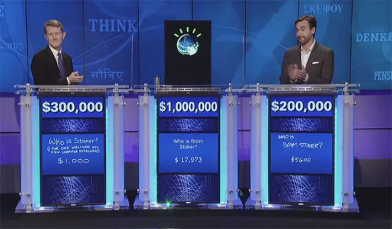
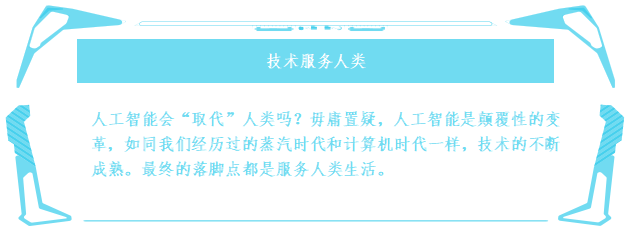

任务三 人工智能发展史上大事件
【任务描述】
“人工智能”会“取代”人类吗？相信对它有所了解的人都想过这个问题；对于人工智能可以取代人类工作这件事，已经在现实生活中显而易见了，比如：无人车间、指纹锁、脸部识别等，但是人工智能“取代”人类去思考、创作乃至学习成长，这真的可以吗？我们一起来看看人工智能近70年的发生的重大事件。
【任务实施】
3.1 “机器，能思考吗？”
1950年阿兰.图灵在他的论文《计算机器与智能》中，开篇的第一句话就是：“机器，能思考吗？”。如果一台机器能够与人类对话，而不被辨别出其机器的身份，那么这台机器就具备智能—这就是著名的“图灵测试”。自此以后，科学家开始不断思考这个问题，在不断摸索中，开始寻找“人工智能”的金钥匙。

3.2达特茅斯会议
1956年，美国汉诺弗小镇的达特茅斯学院中聚集了一群踌躇满志的天才，他们主要讨论机器如何来模仿智能的特征，比如像人类一样思考；使用语言；形成抽象概念；解决人类现存的问题。这次会议被命名为“人工智能夏季研讨会”，这也是人类历史上首次提出“人工智能”的概念；达特茅斯会议就这样拉开了“人工智能”的序幕。
3.3人机大战—“深蓝”
1997年，IBM的超级计算机“深蓝”挑战世界第一象棋冠军盖瑞•卡斯帕洛夫，人工智能又再次出现在人们的视野中。卡斯帕洛夫一分钟可以思考3步棋，而“深蓝”存储了一百年来几乎所有顶级大师的棋谱，一秒钟可以思考两亿步棋。在最后的决胜局中，卡斯帕洛夫仅仅走了十九步便失去了耐心离开现场，这场人机大战以机器完胜人类代表而结束，人工智能顿时声名大噪。
3.4智力问答——“沃森”
2011年，IBM人工智能系统“沃森”决定向北美热播的智力问答节目《危险边缘》宣战，能从节目中胜出的都是上知天文下知地理的学霸级人物，很多人并不看好“沃森”。“沃森”的大脑中虽然已经输入全套百科全书，数百万份的资料，强大的处理器由90台服务器和360个计算机芯片驱动，但是问题的难点并不是储存丰富知识和快速的检索，更重要的是需要让“沃森”理解出题者的问话，对！就是像人类一样“理解”；于是“沃森”像人一样疯狂的“训练”，通过155场模拟赛，8000次以上实验，“沃森”在挑战两位史上获得奖金最多的两位人类选手时，再一次完胜。

3.5世纪大战——“AIphaGo”
2016年3月，世界顶尖围棋高手李世石九段接受了谷歌人工智能“AlphaGo”的挑战；众所周知，围棋千古不同局，万千变化多达10的172次方。麻省理工学院大脑与认识科学系教授托马斯•波吉奥表示：围棋的走法比宇宙中的原子数还多，与“深蓝”不同的是，“AlphaGo”不能仅仅依靠“蛮力”的编程，也不可能将所有走法的可能性都存储起来，我们所应用的是允许机器被训练，并不断学习成长的算法，这个算法称之为：深度学习。在第二局37手“AlphaGo”走出了天马星空的一幕，让很多围观的人汗毛直立，这一步棋让李世石整整想了15分钟，但已经回天无力了，最终“AlphaGo”完胜人类代表李世石；我们在“AlphaGo”身上仿佛已经看到人类的很多特质，比如创造力、直觉和复杂的思考
3.6第一台聊天机器人Eliza
在 1964 年至 1966 年间，麻省理工学院人工智能实验室的德裔美国计算机科学家约瑟夫·维森鲍姆（Joseph Weizenbaum）开发了历史上第一个聊天机器人 — Eliza。Eliza 的名字源于爱尔兰剧作家萧伯纳的戏剧作品《卖花女》中的角色，剧中出身贫寒的卖花女 Eliza 通过学习与上流社会沟通的方式，变成大使馆舞会上人人艳羡的“匈牙利王家公主”。作为世界上第一个聊天机器人，Eliza 被其作者赋予了充满戏剧性的内涵。
3.7 第一例专家系统DENDRAL
1968年，美国斯坦福大学问研发成功专家系统DENDRAL，DENDRAL是世界上第一例成功的专家系统，它的出现标志着人工智能的一个新领域——专家系统的诞生。
3.8 CNN夺冠ImageNet
2012年，Hinton的学生Alex依靠8层深的卷积神经网络（Convolutional Neural Network，CNN）一举获得了ILSVRC 2012比赛的冠军，瞬间点燃了卷积神经网络研究的热潮。AlexNet成功应用了ReLU激活函数、Dropout、最大覆盖池化、LRN层、GPU加速等新技术，并启发了后续更多的技术创新。自AlexNet于2012年提出后，深度学习领域的研究发展极其迅速，基本上每年甚至每几个月都会出现新一代的技术。
3.9 DeepID算法人脸识别率首次超过人眼识别
2014年香港中文大学的汤晓鸥、王晓刚及其研究团队宣布，他们所研发的DeepID人脸识别技术比肉眼识别更精准，准确率超过99%，该计算机视觉研究组所研发的深度学习模型DeepID， 在LFW（Labeled Faces in the Wild）数据库上获得了99.15%的识别率，而LFW是人脸识别领域使用最广泛的测试基准。实验发现，如果仅给出人脸的中心区域，肉眼在LFW上的识别率97.52%。这也是计算机自动识别算法的识别率首次超过肉眼。
3.10谷歌发布 Cloud AutoML
2018年1月，谷歌 发布Cloud AutoML 系统，Cloud AutoML是基于监督学习，开发者只需要通过鼠标拖拽的方式上传一组图片、导入标签，随后谷歌系统就会自动生成一个定制化的机器学习模型，几乎不需要任何人为的干预。换句话说，即便你不懂机器学习的专业知识，也可以借此来从事一些人工智能领域的工作！

【任务拓展】
人工智能作为新一轮产业革命的核心驱动力，将进一步释放历次科技革命和产业革命积蓄的巨大能量，创造新的强大引擎，重构生产、分配、交换、消费等经济活动各环节，形成从宏到微观各领域的智能化新需求，催生新技术、新产品、新产业、新业态、新模式，引发经济结构重大变革，深刻改变人生产方式和思维模式，实现社会生产力的整体跃升。人工智能会学习、会行动到能思考、能应变，两种不同的智能水平可能带来的人类工作、生活的巨大变化。结合自己的生活和未来的工作，探讨我们和机器怎么协同共处呢？